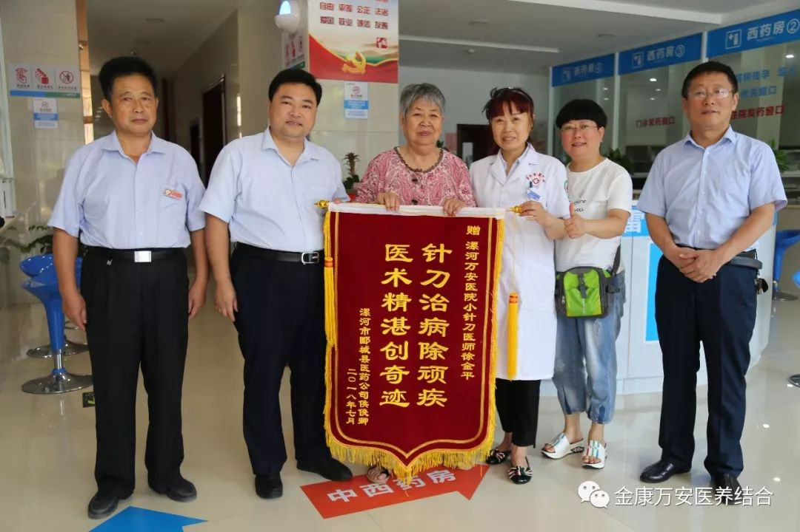
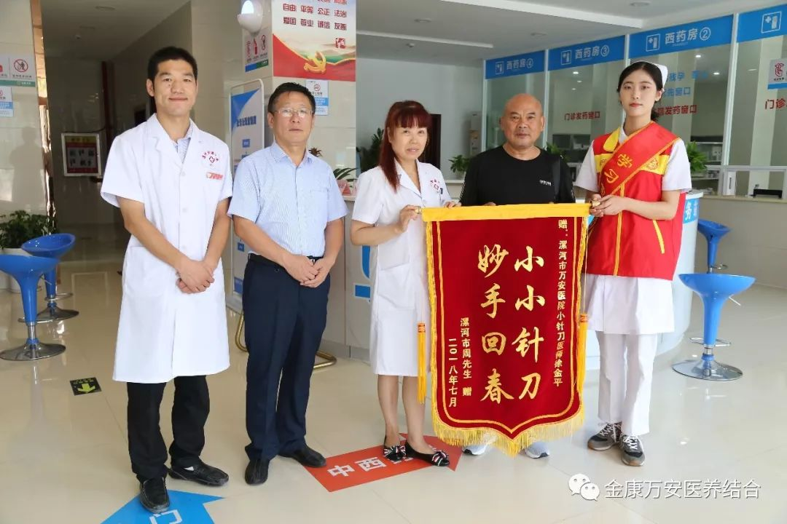

针刀医术创奇迹 家属致谢送锦旗
人气: "" 时间：2018-07-20
2018年7月20号早上，漯河万安康复医院康复科医师徐金平接连收到患者及其家属送来的感谢锦旗。一面写有“医术精湛创奇迹，针刀治病除顽疾”；另一面写有“小小针刀，妙手回春”。

左一后勤院长杨延顺 左二院长王卫峰 左三患者候奶奶 右一业务院长王立信 右三康复科医师徐金平
患者候奶奶脑梗塞后遗症已有8年，不能正常走路，胳膊不能抬起。这期间去过第一人民医院、中心医院、六院治疗，但是效果一直不是很好。候奶奶家属听朋友说漯河万安康复医院康复科治疗脑梗塞后遗症效果很好，抱着试试的态度来我院治疗。
候奶奶在我院康复科徐金平医师治疗2天后胳膊不仅能抬起还能拿梳子梳头了。另外候奶奶由于脑梗塞导致的脚趾并拢也伸开了，也能正常走路了。候奶奶能生活自理了，不仅候奶奶自己高兴，多年来照顾候奶奶的家人们更为高兴。候奶奶及其家属为了表示感谢特送一面锦旗。
患者周爷爷腰椎狭窄、坐骨神经痛、下肢麻木。来我院治疗之前去过好多地方治疗只能缓解症状，后来经病友介绍来我院康复科治疗，经过康复科徐金平医师治疗15天后恢复正常。周爷爷为了表示对漯河万安康复医院的感谢特意送来一面锦旗。

左二业务院长王立信左三康复科医师徐金平右二患者周爷爷
这面锦旗传递的不仅是患者及其家属的感激，也是对我们医护人员的认可，更是我们不断前进的动力!
这只是漯河金康万安康复医院全体医护人员用心守护病患健康的一个缩影。近年来，我院以“孝慈仁善”文化为载体，“以病人、老人为中心，以质量为核心，以服务为先导，以奉献为己任”为服务宗旨，让医院服务更贴心、患者更舒心、家属更安心。